Nakafurano
Nakafurano · Hokkaido
Nakafurano
Highlighted on the Hokkaido map.
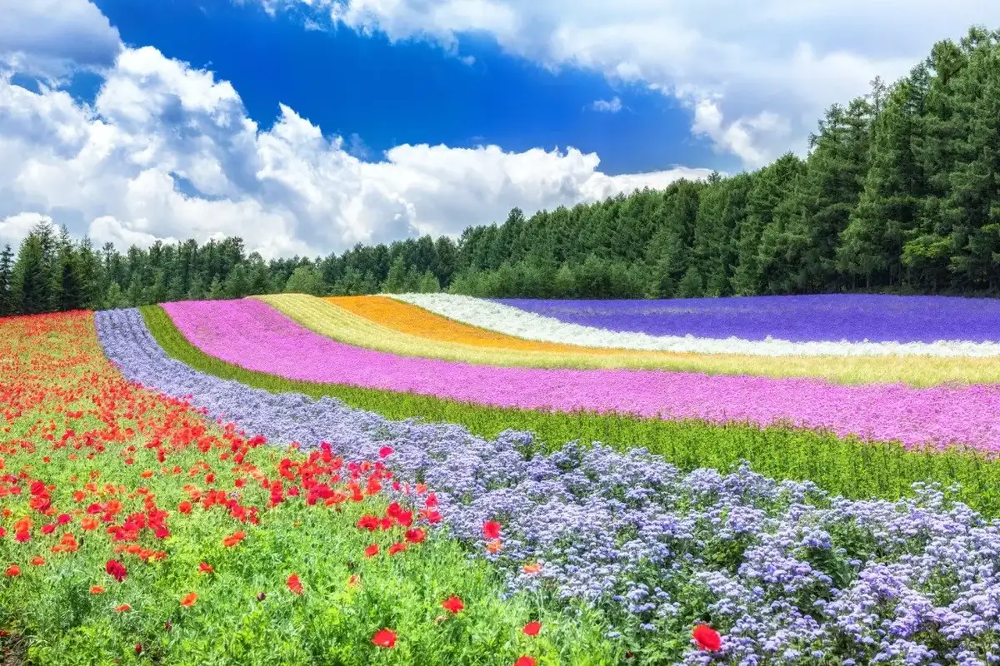
Stay
ホテル ハナフジイン
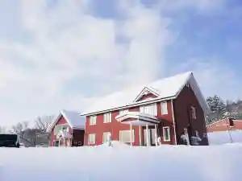
Hoteru Hanafujiin
富良野ガーデンコテージちむとちま
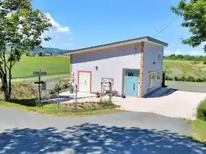
Furano Gaadenkoteeji Chimutochima
Furano Lookout
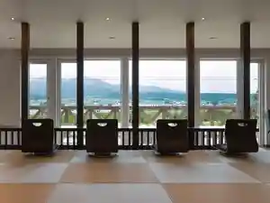
Furano Lookout
富良野リゾート オリカ
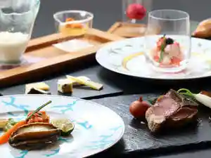
Furano Rizooto Orika
スパ＆ホテルリゾート ふらのラテール
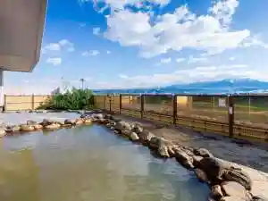
Supa & Hoterurizooto Furano Rateeru
プチホテル ブランクレール
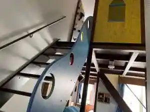
Puchihoteru Burankureeru
プチホテル ブランネージュ
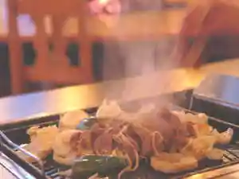
Puchihoteru Buranneeju
プチホテル ブランフルール

Puchihoteru Buranfuruuru
Shikauchi Furano
Shikauchi Furano
FURANO COTTAGE SHELTER
Furano Cottage Shelter
四季の宿 KI・ZU・NA
Shiki No Yado Ki Zu Na
The North Peak Nakafurano
The North Peak Nakafurano
Dining
とみたメロンハウス
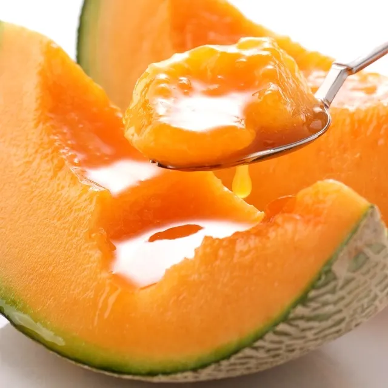
Tomita Meronhausu
ペンション歩風里

Penshon Ho Kaze Sato
ポプラファーム 中富良野本店
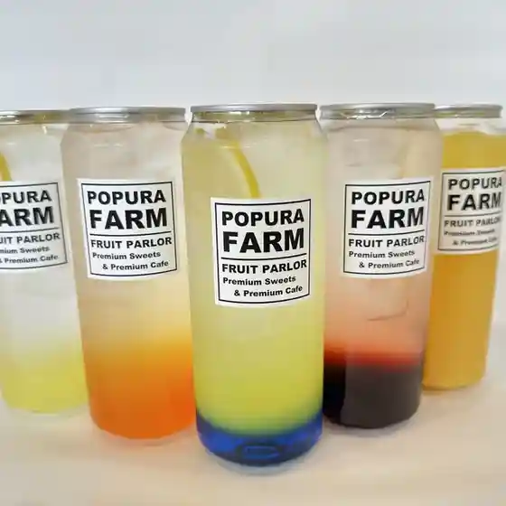
Popurafaamu Nakafurano Honten
GLAMP SORA
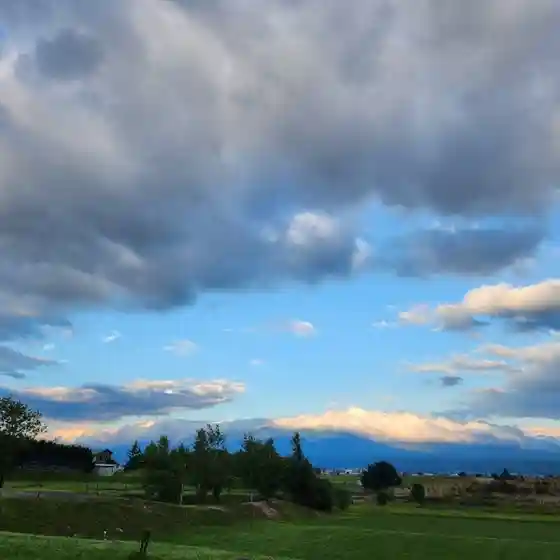
Glamp Sora
ファーム富田
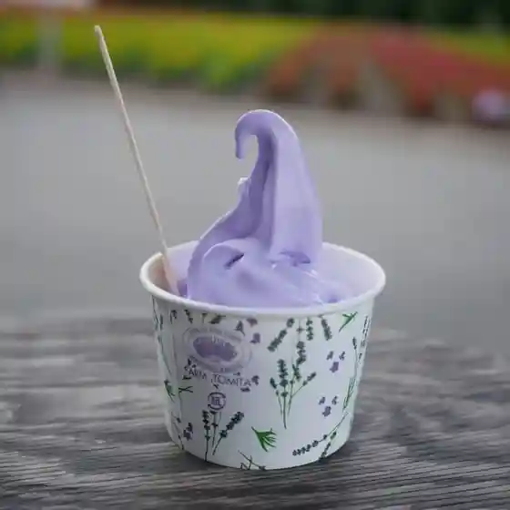
Faamu Tomita
ポカラダイニング 中富良野店
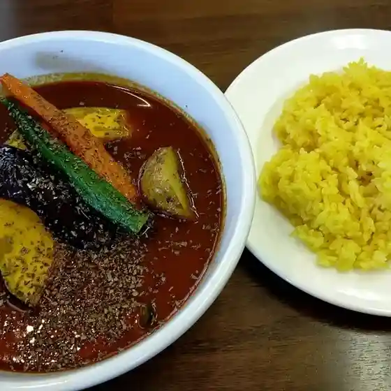
Pokaradainingu Nakafurano Mise
きらら
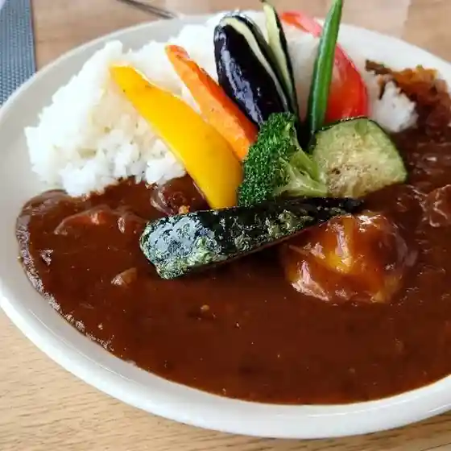
Kirara
すぎやま珈琲
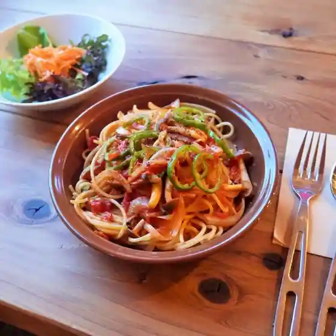
Sugiyama Koohii
富良野ジンギスカン ひつじの丘
Furano Jingisukan Hitsujino Oka
ノーザンスターロッジ
Noozansutaarojji
ポプリの舍
Popuri No Sha
マコト大作戦
Makoto Daisakusen
六花山荘
Rikka Sansou
MOTOMACHI DELI
Motomachi Deli
焼き屋たまねぎ
Yaki Ya Tamanegi
ネパールダイニング 中富良野店
Nepaarudainingu Nakafurano Mise
北星庵
Hokusei Iori
FURANO PIZZA
Furano Pizza
ハセガワ
Hasegawa
カフェ ノッカ
Kafe Nokka
ふくだめろん
Fukudameron
スパ&ホテルリゾートふらのラテール
Supa & Hoterurizooto Furano Rateeru
寺坂農園
Terasaka Nouen
大衆食堂 満旬屋
Taishuushokudou Man Jun Ya
Sights
Farm Tomita
Farm Tomita
Hokusei Mountain Lavender Garden
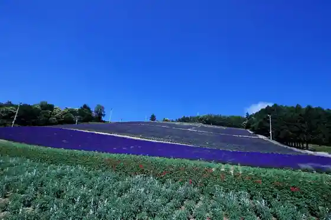
Hokusei Mountain Rabenda Sono